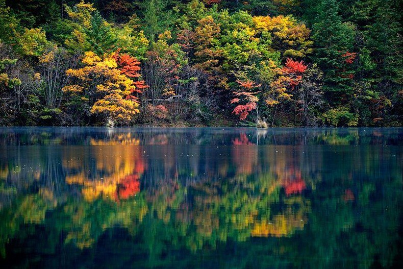

九寨沟——镜海
镜海是九寨沟著名景点之一，镜海一平如镜，故得其名。每当晨曦初露或朝霞遍染之时，蓝天、白云、远山、近树，尽纳海底，海中景观，线条分明，色泽艳丽。
镜海紧邻在空谷的下游，湖呈狭长形，长约一公里，为林木所包围。对岸山璧像一座巨大的石屏风。右侧是镜海的下游，毗邻诺日朗群海；左侧是镜海上游，与镜海山谷衔接。镜海有三奇：晴日无风时，水面光滑如镜，景物毫不失真地被复制到水中，纤毫悉见；夏日细雨轻洒时，水面微绉水波，顺湖而上可见一条若有若无，如细绢般轻柔的白色水带，其上不见雨点，平滑光亮，带外则波光粼粼，姿色互异中让人恍惚迷离；镜海中有不少长20～30米的风倒巨树在水中半浮半沉，其中有两株巨树的梢头半露，其上竟然生出了灌木苔蕨，如盆景般于湖心亭亭玉立。在万籁俱静的月夜里游镜海又是另一番滋味。